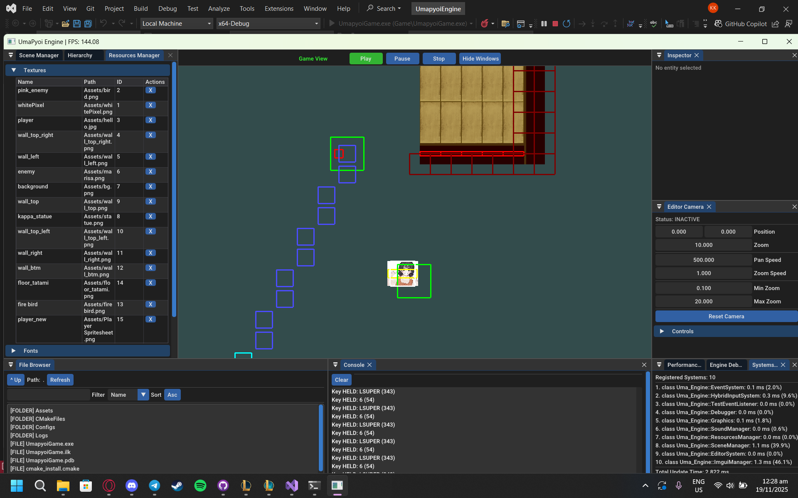

C++ gameplay and engine programmer
I'm a Computer Science student at Singapore Institute of Technology (SIT) and DigiPen Institute of Technology Singapore. I write the code that makes games behave: how enemies find their way, how characters switch between states, and how sound plays.
See my work Download resumeCase studies

assets/umapyoi-cover.pngUmapyoi Engine: state machine and enemy AI
A C++ system that runs 40 Lua gameplay scripts, plus 15 enemy state scripts on top of it.
A* pathfinding without frame spikes
Staggered 0.5 s re-path timers and a 2,000-step search cap. It drives 17 enemy and boss scripts.
 assets/flowfield-cover.png
assets/flowfield-cover.pngParry Everything: flow-field pathfinding
One shared field steers every enemy around walls and lava in generated dungeons.
Currently working on
AnytimeReno (GAM300, school group project)
An interior design web app built in Unity for WebGL, with 2D and 3D room editors and drag-and-drop furniture. My parts:
- Floor plan image import: bring a floor plan image into the scene, then crop (including when rotated), rotate, move and scale it.
- Automatic wall detection: OpenCV.js traces the walls in the image and turns them into editable walls, closing door and window gaps only where the image shows a frame.
- Scale calibration: click both ends of a known measurement and type its length, and every wall comes out in real millimetres.
- Undo and redo: snapshot history of up to 100 steps for floor plan and furniture edits.
About
On Umapyoi Engine, a custom C++20 2D game engine built as a DigiPen team project, I wrote 3,677 lines of C++: the FMOD sound system, the finite state machine (FSM) system and the A* pathfinder. On Parry Everything, a team project, I built the enemy pathfinding, sound manager and particle system.
During my Nanyang Polytechnic diploma, I interned at Nanyang Technological University (NTU) for 3 months. There I fixed 6 bugs and revamped 2 features in a C# educational game where users solve challenge maps with code blocks.
Now I'm on my GAM300 team project. We run 1-week sprints, review each other's pull requests in Git, and are adding build tests.
C++C#LuaFMODGitFigmaClaudeGemini
Contact
I'm looking for a software engineering or game programming internship under SIT's Integrated Work Study Programme (IWSP), starting May 2027.
- Email: kohkaiyang@gmail.com
- LinkedIn: linkedin.com/in/koh-ky
- Code: Umapyoi Engine and Parry Everything on GitHub